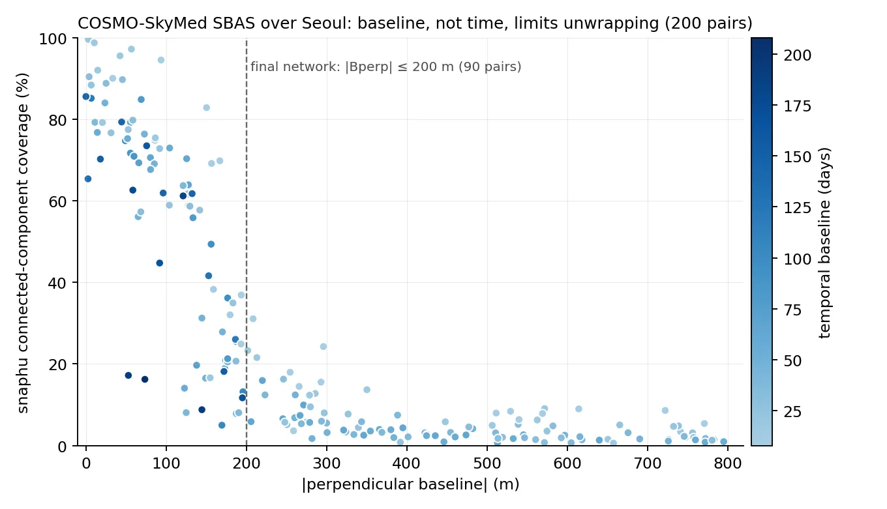
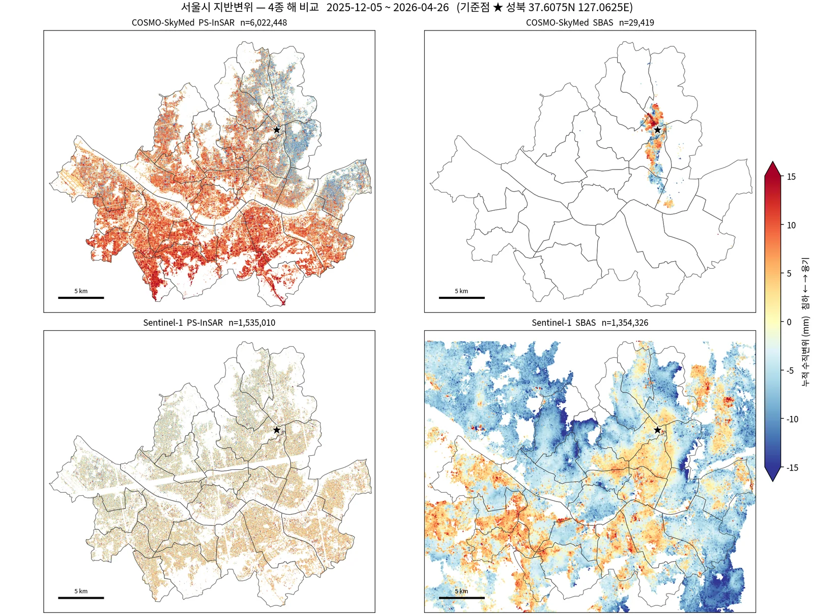
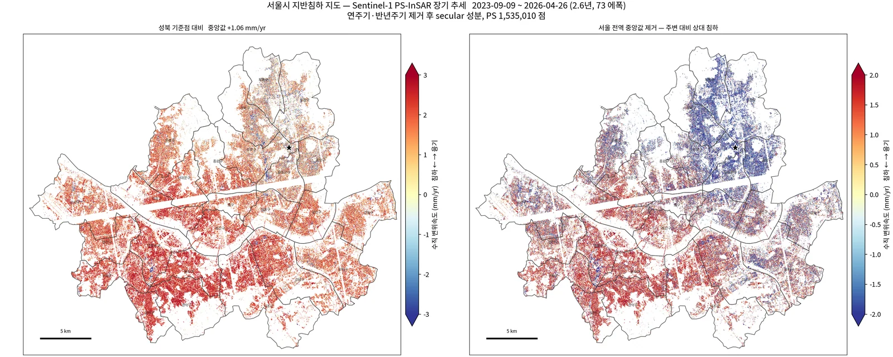
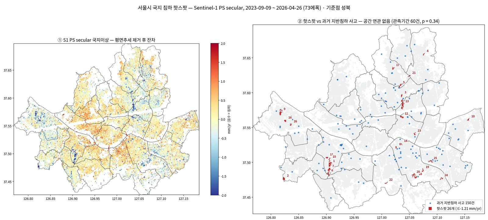
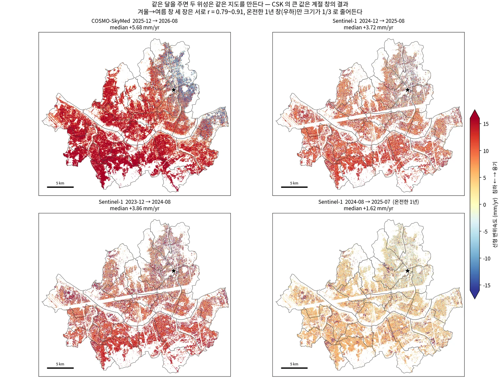
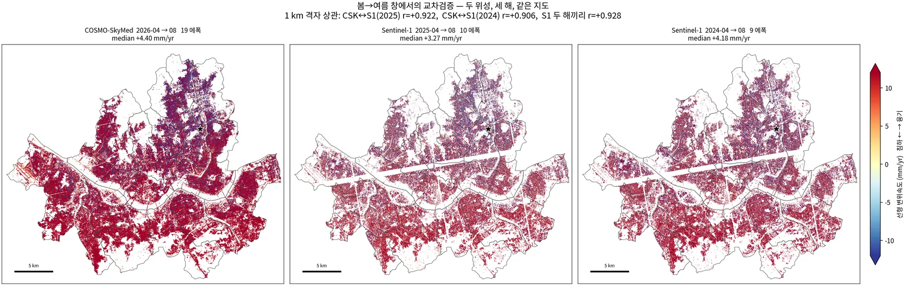
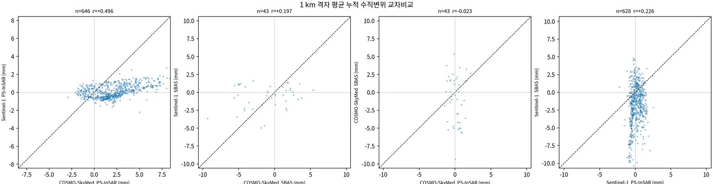
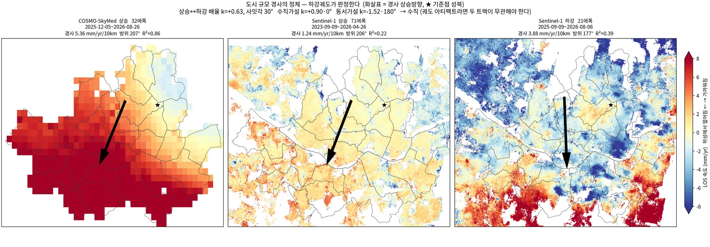

서울 COSMO-SkyMed PS-InSAR와 Sentinel-1 교차검증Seoul COSMO-SkyMed PS-InSAR with Sentinel-1 Cross-Validation
COSMO-SkyMed 2세대(X밴드) 32씬으로 서울 전역 PS-InSAR 6,022,448점을 산출함. CSG 포맷용 ISCE2 어댑터를 직접 만들고 StaMPS Python 포팅판의 결과 오류·미종료·메모리 버그를 고쳐 완주함. Sentinel-1 상승·하강 결과와 비교해 같은 계절창에서 r=0.91~0.92를 확인했고, 도시 규모 남북경사가 수직 지반운동임을 상승/하강 경사벡터로 판정함.Produced a city-wide PS-InSAR map of Seoul with 6,022,448 persistent scatterers from 32 COSMO-SkyMed Second Generation (X-band) scenes. This required a custom ISCE2 reader for the CSG format and fixes to correctness, runtime and memory bugs in a Python port of StaMPS. Cross-validated against Sentinel-1 ascending and descending stacks (r = 0.91–0.92 for matching seasonal windows) and used ascending/descending tilt vectors to show that a city-scale north–south tilt is vertical ground motion.
배경 · 목표Background
- 광역 지자체 지반침하 지도 과제. 고해상도 X밴드(COSMO-SkyMed 2세대) 8일 간격 32씬(2025-12-05~2026-08-26)이 주 자료.
- ISCE2 2.6.3은 1세대 CSK만 지원 — CSG는 영상이 S01/IMG(float32 I/Q)로 옮겨지고 메타데이터 키가 바뀌어 그대로 읽히지 않음.
- MATLAB이 없어 StaMPS Python 포팅판을 사용. 서울 전역(605 km², 후보 1,500만 점) 규모에서 처음으로 다중 패치로 돌리자 숨어 있던 버그가 드러남.
- 검증 질문 세 가지: X밴드 결과가 C밴드(Sentinel-1)와 같은 지반운동을 보는가, 8.7개월 자료로 연율을 말할 수 있는가, 지도에 보이는 도시 규모 남북경사는 실제 지반운동인가.
- Ground-subsidence mapping project for a metropolitan government. Main input: 32 COSMO-SkyMed Second Generation (X-band) scenes at 8-day spacing (2025-12-05 to 2026-08-26).
- ISCE2 2.6.3 only reads first-generation CSK. In CSG products the image moved to S01/IMG (float32 I/Q) and several metadata keys were renamed, so ISCE2 could not read them as-is.
- With no MATLAB available, a Python port of StaMPS was used. Running it with many patches over the full city (605 km², 15 million candidates) exposed bugs that a single-patch run hides.
- Three validation questions: does X-band see the same ground motion as C-band Sentinel-1, can an 8.7-month stack give an annual rate, and is the city-scale north–south tilt real ground motion?
방법Method
- CSG 어댑터 자체 개발: CSG HDF5를 1세대 CSK 레이아웃처럼 보이게 하는 shim(도플러·기준시각 키 재매핑) + 2,048줄 블록 numpy 추출 → ISCE2 stripmapStack 코레지 그대로 사용(마스터 2026-04-20).
- 서울 폴리곤 마스크 crop(13881×20001): 레이더 좌표에서 서울이 비스듬해 외접 사각형은 66.8% — 실제 절감은 폴리곤 마스크에서.
- StaMPS 포팅판 9개 범주 버그 수정(섀도 디렉토리): 패치 seek 4배 과다·마스크 첫 줄만 읽기·DEM을 복소수로 읽기(결과 오류), 패치 병합 크래시 2건, PS마다 np.isreal 호출(16.4일→4분)·공간필터 전수 거리계산(4.4일→40분, cKDTree), complex128 임시배열 OOM(행 블록 in-place).
- PS 후보 15,145,274 → 선별 9,617,192 → 병합 6,322,003(감마 중앙 0.838) → 언래핑·SCLA·대기필터 → coh>0.6 최종 6,022,448점.
- 같은 32씬으로 SBAS도 처리(MintPy): 수직기선 ≤200 m·시간 무제한 90쌍 망, 크롭 SLC에서 전해상도 간섭도를 디스크에 쓰지 않고 멀티룩 누적.
- Sentinel-1 상승 path127(2023-09~2026-04, 73씬) PS·SBAS와 하강 S1C path32(2025-09~2026-08, 21씬) SBAS를 새로 처리. 4종을 공통 기준점(성북)·수직환산·같은 창 직선적합(두 에폭 차분 금지)으로 1 km 격자 비교.
- 경사 판정: 각 트랙 LOS 속도에 평면을 적합해 경사벡터 g를 구하고, 상승(CSK)↔하강(S1 DSC) 배율 k와 사잇각을 수직(k=u_D/u_A=+0.90, 0°)·동서(k=e_D/e_A=−1.52, 180°)·궤도오차(k≈0) 가설과 비교.
- 국지 핫스팟: S1 2.6년 secular(연·반년주기 제거) 100 m 격자에서 평면을 빼고 잔차 ≤ −2.5σ 군집 추출 → 홀/짝 에폭 분할 재현, 공간셔플 귀무, CSK 부호, 국토안전관리원 지반침하 사고기록과 대조.
- Custom CSG adapter: a shim that presents a CSG HDF5 file in the first-generation CSK layout (remapped Doppler and reference-time keys), plus chunked numpy extraction in 2,048-line blocks. The standard ISCE2 stripmapStack coregistration then runs unchanged (reference date 2026-04-20).
- Cropped to a Seoul polygon mask (13881×20001). Because Seoul is skewed in radar coordinates, the bounding box still covers 66.8% of the frame, so most of the saving comes from the polygon mask.
- Fixed nine categories of bugs in the StaMPS Python port, in a shadow directory. Wrong results: a 4× over-seek in patch reads, a mask read only on the patch's first line, the DEM read as complex. Crashes: two in patch merging. Runs that would not finish: np.isreal called once per PS (16.4 days → 4 min) and brute-force distances in the spatial filter (4.4 days → 40 min with a cKDTree). Out-of-memory: complex128 temporaries, replaced by in-place row blocks.
- Pipeline counts: 15,145,274 PS candidates → 9,617,192 selected → 6,322,003 merged (median gamma 0.838) → unwrapping, SCLA and atmospheric filtering → 6,022,448 final PS (coh > 0.6).
- SBAS on the same 32 scenes with MintPy. The network has 90 pairs, with perpendicular baseline ≤ 200 m and no time limit. Full-resolution interferograms are never written to disk; looks are accumulated directly from the cropped SLCs.
- New Sentinel-1 runs: ascending path 127 (2023-09 to 2026-04, 73 scenes, PS and SBAS) and descending S1C path 32 (2025-09 to 2026-08, 21 scenes, SBAS). All four products were compared on a 1 km grid with a common reference point, vertical projection and an all-epoch linear fit over the same window (two-epoch differences were avoided).
- Tilt test: fit a plane to each track's LOS velocity to get a gradient vector g. Then compare the ascending (CSK) to descending (S1 DSC) ratio k and the angle between the vectors with three hypotheses: vertical (k = u_D/u_A = +0.90, 0°), east–west (k = e_D/e_A = −1.52, 180°) and orbital error (k ≈ 0).
- Local hotspots: on a 100 m grid of the 2.6-year Sentinel-1 secular rate (annual and semi-annual terms removed), remove a plane and cluster residuals ≤ −2.5σ. Clusters were checked with odd/even-epoch split halves, a spatial-shuffle null, the sign of the CSK displacement, and the national ground-subsidence incident records (Korea Authority of Land & Infrastructure Safety).
결과Results
- CSK PS 6,022,448점(9,955점/km²). Sentinel-1 PS 1,535,010점의 약 4배 밀도.
- 교차센서 일치: 봄→여름(4→8월) 창 1 km 격자 상관 CSK 2026↔S1 2025 r=0.922, ↔S1 2024 r=0.906 — S1 자신의 해간 재현성 r=0.928과 동급.
- 도심 X밴드 SBAS는 실패: 시간결맞음 평균 0.112(tc≥0.5 화소 0.86%) vs S1 0.469(47.5%), 35배 차. 같은 영상에서 PS는 감마 중앙 0.84.
- SBAS 망은 시간이 아니라 수직기선이 지배: 기선 0~50 m 연결성분 중앙 85% → 250~300 m 8%. 기선 0 m·144일 쌍 85.6%. 기선 200 m 망으로 연결성분 중앙 7.4% → 63.6%.
- 남북경사 판정: CSK 상승 5.36 mm/yr/10km(방위 207°) vs S1 하강 3.88(177°), k=+0.63·사잇각 30° → 수직가설(+0.90·0°)에 가깝고 동서가설(−1.52·180°)에서 멂. 남서 충적층이 북동 화강암 구릉보다 더 부푸는 수직 운동.
- 국지 침하 핫스팟 26개(2.64 km², 서울의 0.44%): 홀/짝 분할 26/26 재현(전역 r=0.898), 공간셔플 귀무 0.2±0.5개, CSK 부호 일치 18/26(p=0.038). 영등포 남북 2.55 km 선형 회랑(평균 −2.51 mm/yr)이 가장 두드러짐.
- 과거 지반침하 사고 133건과는 공간 연관 없음(무작위 대비 p=0.41, 관측기간 60건 p=0.34, 핫스팟 내 1건 vs 기대 0.9건).
- 6,022,448 CSK PS (9,955 per km²), about four times the density of the 1,535,010 Sentinel-1 PS.
- Cross-sensor agreement: for the spring-to-summer (Apr–Aug) window, 1 km grid correlation is r = 0.922 for CSK 2026 vs S1 2025 and r = 0.906 vs S1 2024. Sentinel-1's own year-to-year repeatability is r = 0.928, so the two sensors agree about as well as Sentinel-1 agrees with itself.
- X-band SBAS fails over the urban core: mean temporal coherence 0.112 (0.86% of pixels ≥ 0.5) vs 0.469 (47.5%) for Sentinel-1, a 35× difference. On the same scenes, PS reach a median gamma of 0.84.
- The SBAS network is limited by perpendicular baseline, not time. Median connected-component coverage is 85% at 0–50 m and 8% at 250–300 m, and a 0 m / 144-day pair still reaches 85.6%. Capping the baseline at 200 m raised median coverage from 7.4% to 63.6%.
- Tilt test: CSK ascending gives 5.36 mm/yr/10 km (azimuth 207°) and S1 descending 3.88 (177°), so k = +0.63 at 30°. This is close to the vertical hypothesis (+0.90, 0°) and far from east–west (−1.52, 180°). The southwestern alluvium rises more than the northeastern granite hills.
- 26 local subsidence hotspots (2.64 km², 0.44% of Seoul). All 26 reappear in odd/even split halves (global r = 0.898), the spatial-shuffle null yields 0.2 ± 0.5 clusters, and CSK agrees in sign for 18 of 26 (p = 0.038). The most prominent is a 2.55 km north–south linear corridor in Yeongdeungpo (mean −2.51 mm/yr).
- No spatial association with 133 past ground-subsidence incidents (p = 0.41 vs random; p = 0.34 for the 60 inside the observation period; 1 incident inside hotspots vs 0.9 expected).









배운 점 · 한계What I learned · Limitations
- 8.7개월(겨울→여름) 자료로 mm/yr를 말하면 안 된다: GNSS 창 직선적합은 +20~25 mm/yr 융기인데 장기 secular는 −1.7~+0.2 mm/yr. CSK 전기간 직선속도 중앙 +5.68 vs S1 2.6년 secular +1.06 mm/yr — 겉보기 6.09배는 센서가 아니라 창 차이였다(같은 달이면 1.2~1.6배). CSK는 '관측기간 누적 변위(mm)'로만 보고.
- 두 에폭 차분은 그날 대기지연을 통째로 싣는다: 창 내 전 에폭 직선적합으로 바꾸자 공통창 상관 −0.131 → +0.496.
- 낮은 r을 불일치로 읽지 말 것: S1 SBAS↔S1 PS는 r=0.219지만 OLS 이득 +0.81 — 같은 신호를 약 4배 잡음으로 본 것. 판단은 깨끗한 쪽을 설명변수로 한 OLS 이득으로(TLS는 잡음 큰 축으로 발산).
- 같은 궤도방향끼리의 일치는 수직/수평을 가르지 못한다: CSK와 S1 상승은 방위각 2° 차. 처음엔 r=0.91 일치를 '실제 신호'의 근거로 썼다가 하강궤도로 다시 판정함.
- 한계: 경사 크기는 창 의존(겨울→여름 4.7~6.4, 1년 1.26, 2.6년 0.65 mm/yr/10km)이고 판정에 쓴 두 트랙 창도 다르다(CSK 0.72년, DSC 0.91년, DSC 평면 R² 0.39). k=0.63은 수직가설 0.905와 정량 일치가 아니라 '방향이 수직 쪽'이라는 상대 판정임.
- 실패 기록: 화소별 상승+하강 분해는 두 번 모두 실패(동서 성분 −15~−39 mm/yr로 비현실적). 두 트랙이 동시에 잘 구속된 창이 없었음. 평면경사 벡터끼리 비교해 우회함.
- 실패 기록: GNSS로는 경사를 독립 확인하지 못함. 서울 북동 상시국이 2023년에 끊기고, 남은 3국은 모두 서남권. 남은 정보는 계통오차 상한 2~3 mm/yr 수준.
- 핫스팟은 싱크홀 예측이 아니다: 사고 1위 원인이 하수관 손상(53/133)인 수 m 규모 공동 붕괴라 100 m·mm/yr 압밀과 물리과정이 다름. 영등포 회랑의 원인(공사·지하수 배수 등)은 위성만으로 단정할 수 없어 미해결.
- 포팅 코드의 버그는 작은 시험에서 숨는다: seek 4배 오류는 단일 패치(시작 오프셋 0)에선 드러나지 않았음. 대용량 병렬은 initargs 대신 fork 전 전역 바인딩(COW)으로 메모리를 워커 수와 무관하게 유지.
- An 8.7-month winter-to-summer stack cannot be quoted in mm/yr. A straight-line fit over that window gives +20 to +25 mm/yr of uplift at GNSS stations whose long-term secular rate is −1.7 to +0.2 mm/yr. The median full-window CSK rate (+5.68 mm/yr) looked 6.09 times the Sentinel-1 2.6-year secular rate (+1.06). That gap came from the window, not the sensor: for the same months the ratio drops to 1.2–1.6. CSK is reported only as cumulative displacement in mm.
- A two-epoch difference carries the full atmospheric delay of both dates. Fitting all epochs in the window raised the cross-sensor correlation over the common window from −0.131 to +0.496.
- A low r is not disagreement. S1 SBAS vs S1 PS has r = 0.219 but an OLS gain of +0.81: the same signal seen with roughly four times the noise. Agreement is judged by OLS gain with the cleaner product as the regressor; TLS diverges toward the noisy axis.
- Agreement between two tracks with the same orbit direction cannot separate vertical from horizontal motion. CSK and S1 ascending differ by only 2° in heading. The r = 0.91 match was first taken as proof of a real signal, and the claim was re-tested with a descending track.
- Limitation: the tilt magnitude depends on the window (4.7–6.4 for winter to summer, 1.26 for a full year, 0.65 mm/yr/10 km over 2.6 years). The two tracks in the test also cover different windows: 0.72 years for CSK and 0.91 years for DSC, whose plane fit has R² of only 0.39. So k = 0.63 does not match 0.905 quantitatively; it only shows that the tilt direction is consistent with vertical motion.
- Failure kept on record: per-pixel ascending/descending decomposition failed twice, giving unrealistic east–west rates of −15 to −39 mm/yr. No window constrained both tracks well at the same time. Comparing plane-gradient vectors instead worked around this.
- Failure kept on record: GNSS could not confirm the tilt independently. The northeastern Seoul stations stopped in 2023 and the remaining three are all in the southwest, so GNSS only bounds systematic error at about 2–3 mm/yr.
- The hotspots are not sinkhole predictions. The leading incident cause is sewer-pipe damage (53 of 133), which produces metre-scale voids that collapse suddenly; that is a different process from 100 m, mm/yr consolidation. The cause of the Yeongdeungpo corridor (construction, groundwater drainage, …) cannot be established from satellite data alone and is still open.
- Bugs in ported code hide in small tests: the 4× seek error is invisible with a single patch (start offset 0). For large parallel jobs, binding big arrays to module globals before fork (copy-on-write) instead of passing them through initargs keeps memory flat as workers are added.
관련 코드Code
sar/cosmo-skymed/
저장소는 센서 → 위성 → 기법 순으로 정리돼 있고, 각 폴더에 입력·출력 표가 있음.The repository is organised by sensor, satellite and technique; each folder documents its inputs and outputs.
코드 저장소는 비공개입니다. 열람이 필요하시면 아래 연락처로 알려주시면 접근 권한을 드립니다.The code repository is private. Email me and I will grant you access.
산출물Deliverables
- CSK PS 6,022,448점 npz/shapefile(vel·coh·hgt·inc + 32시점 시계열)
- S1 PS 1,535,010점, S1/CSK SBAS GeoTIFF 5종씩, S1 하강 SBAS
- 4종 비교·계절창·경사판정·GNSS 대조 JSON과 지도 7장, 종합 보고서
- 국지 침하 핫스팟 26개 shapefile + 100 m 국지이상 래스터
- CSG→ISCE2 어댑터와 StaMPS 포팅판 수정본(코드 번들)
- CSK PS product with 6,022,448 points as npz and shapefile (velocity, coherence, height, incidence + 32-epoch time series)
- Sentinel-1 PS product (1,535,010 points), five SBAS GeoTIFF layers each for S1 and CSK, and a descending S1 SBAS product
- JSON results and 7 maps for the four-product comparison, seasonal-window test, tilt test and GNSS check, plus a written report
- Shapefile of 26 local subsidence hotspots and a 100 m local-anomaly raster
- CSG-to-ISCE2 adapter and patched StaMPS Python port (code bundle)
원본 보고서와 발표자료는 사내 자료로 공개하지 않음. 분석 코드는 GitHub에 정리되어 있음.Source reports and decks are internal and not published here. Analysis code is organised on GitHub.